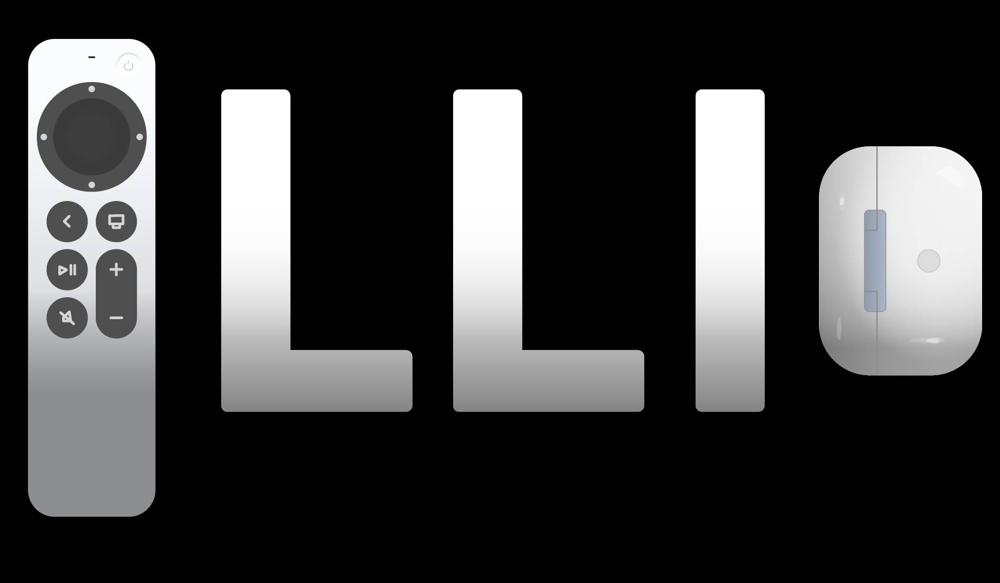
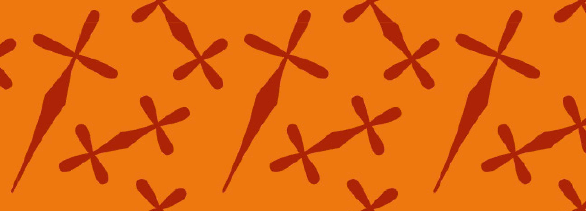
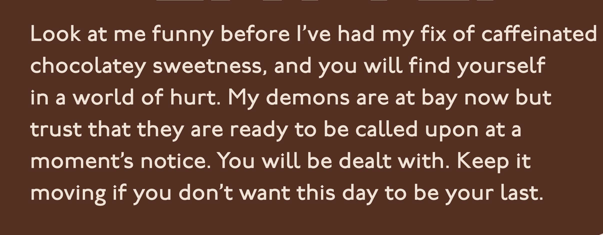

My objective was to create a system focused on the role of human activity and climate change in death of coral reefs globally. Using Adobe Illustrator and Adobe InDesign, I created original icons, patterns, posters, and publication spreads. My work was shown in the Suffolk University Gallery in a popup exhibition which I helped assemble and vinyl cut letters for.
This illustration was created as a hypothetical visual for a Forbes article about Apple reaching $3 trillion market value. Using Adobe Illustrator, I stylized letters to appear more metallic and created graphics of Apple products.
I created a type specimen for the typeface Arsenica with the goal of demonstrating its versatility and potential different applications. I included content relating to Italy because early Italian 19th century posters were was one of the typeface’s main stylistic influences.
I wanted to create a can design for a beverage that would catch consumers’ attention from afar. I created the brand Dirty Blonde—mocha flavored lattes with blonde shots of espresso. I vectorized the image of the mascot in Adobe Illustrator and combined with type and nutrition information in Adobe InDesign.
